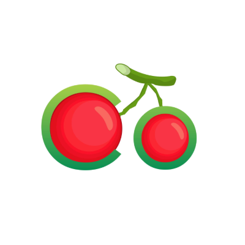

The ColaberryAI Design System
The brand foundations, components and rules that power ColaberryAI — the School of Data Science & Analytics building job-ready talent since 2012. Warm, inclusive, and confident.
Foundations
Design principles
Five beliefs that guide every decision in this system — the “why” behind the tokens and components. When a call is ambiguous, these break the tie.
Inclusive by default
Built for every background and ability. Accessibility, plain language, and generous touch targets are requirements, not extras.
Warm, not loud
Encouraging and human. Soft shapes, gentle motion, and friendly copy — confidence without hype or noise.
Clarity over decoration
We teach data — so we respect it. Content and numbers lead; ornament earns its place or it's cut.
One system, many makers
Semantic tokens and reusable components mean a marketer, a developer, and an AI agent all produce the same brand.
Consistent & constant
The teal primary never changes; foreground inverts with the background. Predictable rules make trustworthy products.
Get started
Use it locally & in Claude
Two ways to build with this system: chat with Claude for quick artifacts, or wire it into your own project in VS Code. Grab the brand guide any time with Download BRAND.md in the sidebar.
Claude chat
Open this project in Claude — or download it and attach the folder to a new chat. (Teams can publish it as the
colaberry-designskill so it's one click.)Ask in plain English, always starting with the magic words:
"Using the ColaberryAI design system, make a 16:9 slide that announces our Spring Data Analytics cohort."Preview, refine, download. Claude returns a live HTML artifact. Tweak it in plain words ("make the headline bigger", "use green") and export when it's right.
Local dev
Download the project and open the folder in VS Code.
Serve it locally so fonts & components load:
# pick one npx serve . python3 -m http.server 8000Link the system in your HTML, then use the tokens & components:
<link rel="stylesheet" href="styles.css"> <script src="_ds_bundle.js"></script> /* then: var(--brand-accent), window.ColaberryDesignSystem_098454 */Copy from the references — open
design-system.htmlfor tokens andui_kits/marketing-website/for full screens.
BRAND.md.Read the guides here
The full brand & developer guides, inline. Hit Copy to grab either one.
Loading…
Loading…
Brand
Logo
A pair of wheels forms the “C” of ColaberryAI — a clean, geometric mark about momentum and forward motion. The wordmark is supplied as a single vector lockup in teal.
Lockups & mark
Foundations
Theme handling
Every color is a semantic token that re-points between light and dark. The rule: foreground inverts with the background; the teal primary stays constant. Toggle the theme in the sidebar to see it live.
Surface
var(--surface-page) flips from white to near-black; cards, borders and sunken fills follow.
Text
var(--text-strong) / --text-muted invert for contrast on either ground.
Accent
var(--brand-accent) stays cyan in both themes; teal primary is the constant.
Foundations
Color
Teal and cyan over a cool neutral ramp. Click any swatch or token to copy it.
Teal — primary
Cyan — accent
Green — success (functional)
Red — danger (functional)
Neutrals
Semantic tokens
Data visualization
We teach data — so charts are first-class. An 8-series categorical palette (ordered for maximum adjacent separation and color-blind safety) plus single-hue sequential and cherry↔leaf diverging scales. Click any swatch to copy.
Foundations
Typography
Plus Jakarta Sans carries display and body; JetBrains Mono handles code & data; the logo is a vector lockup.
Foundations
Spacing & Radius
A 4px base grid and a rounded radius scale that echoes the circular mark.
Spacing
Radius
Elevation
Foundations
Motion
Motion is functional, not decorative — it confirms an action, guides the eye, and softens change. Gentle easing, quick durations, and always a graceful fallback for reduced motion.
Purposeful
Every animation explains a change — never motion for its own sake.
Quick
140–360ms. Fast enough to feel responsive, slow enough to read.
Gentle
Ease-out by default; a soft spring only for affirmations. No linear, no harsh bounces.
Accessible
Honors prefers-reduced-motion — transitions collapse to instant.
Easing
The easing scale
linear or hard bounces.Duration
Scaled to travel distance
Motion recipes
Reusable patterns — the same building blocks every component and page uses, so motion feels like one hand drew it.
opacity 0→1 + translateY --motion-rise→0 · --dur-slow · ease-out
each child delayed --stagger (70ms) — lists, grids, hero lines
scrim fades; panel scales 0.96→1 · --dur-slow · emphasized
scale 0.6→1 with --ease-spring · checkmarks, toggles only
skeleton sweep, ~1.4s loop — the one allowed continuous motion
opacity 1→0 + slight translateY · --dur-fast · ease-in
Interactive states — hover, press & focus
Hover · card
Lifts 6px with a deeper shadow over 220ms. Click-through cards only.
Hover · press · button
Fill darkens on hover; nudges down 1px on press.
Focus · input
Teal border + 3px cyan focus ring appears instantly.
Hover · link
Underline wipes in from the left over 220ms.
Hover · quiet buttons
Fill in a soft sunken background — no jump.
Entrance · stagger
70ms apart, fade + rise.
What moves on each interaction
| Interaction | What changes | Token |
|---|---|---|
| Hover — solid button | Fill steps one shade darker (red-500 → 600) | 140ms · ease-out |
| Hover — ghost / outline | Soft sunken background fills in | 140ms · ease-out |
| Hover — card (clickable) | Lifts 6px, shadow deepens (sm → lg) | 220ms · ease-out |
| Hover — link | Underline wipes in from the left | 220ms · ease-out |
| Press — button | Fill darkens again + translateY(1px) | 140ms · ease-out |
| Focus — any control | 3px cyan focus ring appears | instant |
| Enter — content / overlay | Fade up 12–14px, stagger 70ms | 360ms · ease-out |
Library
Components
Twenty token-driven React primitives — all live and interactive below, animated to the Motion spec. Hover, toggle, open and click them. Props live in each component's .d.ts.
In practice
Example layouts
Real screens composed entirely from these tokens and components — what you get when you apply the system. Toggle dark mode to watch them adapt.
Foundations
Accessibility
WCAG 2.2 contrast audit of core pairings. Cyan and light teal are accent / large-text colors — for body text use blue-600+, neutral-800, or dark text on a tint.
| Pairing | Sample | Ratio | Verdict |
|---|
Beyond contrast
Contrast is necessary but not sufficient. Every component in this system is built to these four pillars — and you should hold your own UI to them too.
Keyboard
- Everything interactive is reachable and operable with Tab / Shift+Tab / Enter / Space.
- Dialogs & drawers trap focus and restore it to the trigger on close.
- Esc closes overlays; arrow keys drive the carousel and pagination.
- No keyboard traps; logical, source-order focus.
Focus
- A visible 3px cyan ring (
--focus-ring) on every focusable element. - Shown on
:focus-visible— keyboard users see it, mouse users aren't distracted. - Focus is never removed without an equally clear replacement.
Touch & targets
- Interactive targets are at least 44×44px (
--target-min) — exceeds WCAG 2.2 (24px). - Buttons share a 48px control height; inputs match for tidy forms.
- Adequate spacing so neighbouring targets aren't mis-tapped.
Semantics & motion
- Native elements first; ARIA roles/labels where needed (dialogs, switches, icon buttons).
- State conveyed by more than color (icons, text, dots).
- All motion respects
prefers-reduced-motionand degrades to fades. - Images carry
alt; decorative art isaria-hidden.
Brand
Logo rules
Protect the mark so it always reads as ColaberryAI.
Clear space & minimum size
Keep clear space equal to the height of the mark on all sides. Minimum width: 120px (horizontal lockup) / 24px (mark).
Do & Don't
- Use the full-color lockup on white or light surfaces.
- Switch to the white lockup on photos, dark, or cherry backgrounds.
- Keep the cherry red constant; invert only the wordmark/neutral.
- Give the mark room — respect the clear space.
- Recolor the mark or apply gradients to it.
- Stretch, rotate, or add shadows / outlines.
- Set the wordmark in any font other than Quicksand.
- Place the color mark on a low-contrast or busy background.
Resources
Asset downloads
Production-ready logo and icon exports live in assets/logo/.

Tokens for tooling
All 245 tokens (+ dark overrides) as JSON — drop into Style Dictionary, Figma Tokens, or Tailwind. Plus the raw CSS token files.
Using the system
Hand-off & prompting
However you make things — by prompting Claude or by writing code — start with
“Using the ColaberryAI design system, …” and describe the outcome. The system supplies the colors,
fonts, logo, voice and components. Full guide in BRAND.md.
Marketing / non-technical
Describe it in plain English → get a downloadable file. No code.
- Say what (post, flyer, email header, slide) and the size.
- Give the words — headline, subtext, call-to-action.
- Name the vibe / program, and ask for “3 options.”
Developers
Tokens & components are machine-readable — Claude scaffolds on-brand UI.
- Link
styles.css; reference semantic tokens, never raw hex. - Use the bundle components via
window.ColaberryDesignSystem_098454. - Copy full screens from
ui_kits/marketing-website/.
Developer checklist
- Link
styles.css— it imports tokens (color, type, spacing) + fonts. - Reference semantic tokens (
--surface-page,--text-strong,--brand-accent) — never raw ramp values. - Set
data-theme="dark"on<html>for dark mode; the accent stays constant. - Use the React primitives from the bundle (Button, Badge, Card, Input, Checkbox, Avatar).
- Use blue-600+ / neutral-800 for body text on white (see Accessibility).
- Plus Jakarta Sans / JetBrains Mono load from Google Fonts — self-host for production (see BRAND.md).
- Standardize icons on Lucide (2px stroke) to match the soft brand shape language.
What to give each person
| Hand this to… | What they need | Where they start |
|---|---|---|
| Marketing / non-technical | This project (or the colaberry-design skill) + the prompt recipe | Describe the artifact → download the HTML file |
| A designer | This page + assets/logo/ | Skim the guide; reuse logos, color, type |
| A developer | styles.css, components/core/, ui_kits/, BRAND.md | Link styles.css, import components |
| Anyone, anywhere | BRAND.md — it's self-contained | Read voice, color & logo rules |